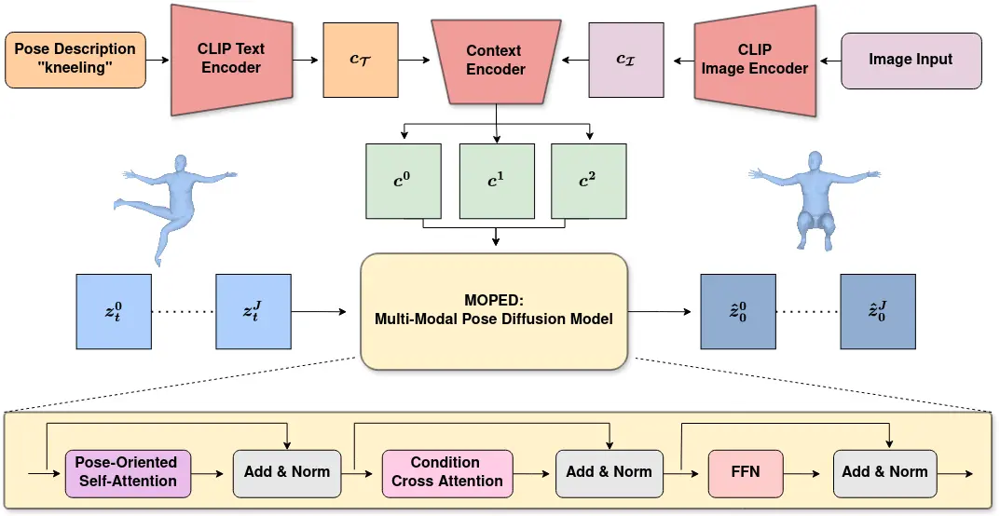
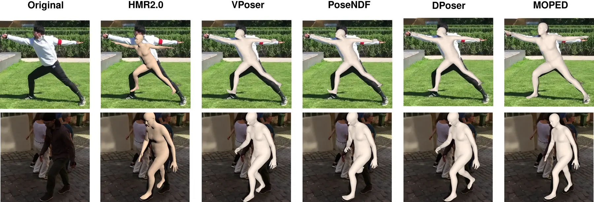
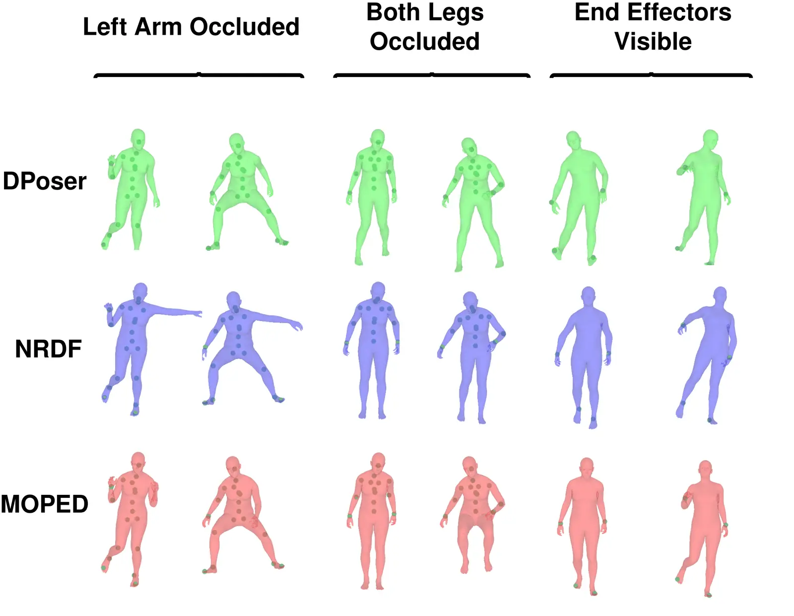
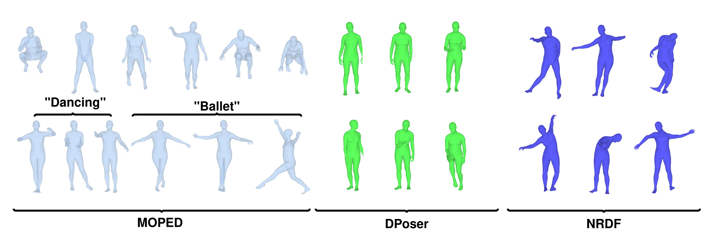
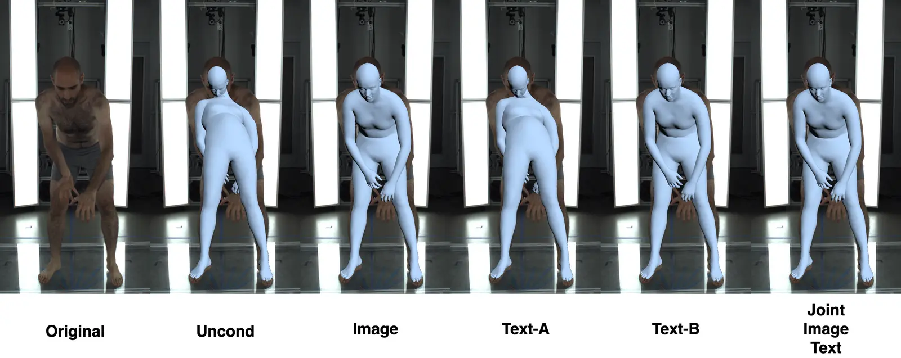

Multi-modal Pose Diffuser: A Multimodal Generative Conditional Pose Prior
WACV 2027
* Work done at UC Riverside. Calvin-Khang Ta is now at Voia; Dripta Raychaudhuri is now at Physion Labs.
Abstract
The Skinned Multi-Person Linear (SMPL) model plays a crucial role in 3D human pose estimation, providing a streamlined yet effective representation of the human body. However, ensuring the validity of SMPL configurations for tasks such as human mesh regression and generation remains a significant challenge, highlighting the necessity for a robust human pose prior capable of discerning realistic human poses. To address this, we introduce MOPED: Multi-mOdal PosE Diffuser. MOPED leverages a multi-modal conditional diffusion model as a prior for SMPL pose parameters, supporting unconditional pose generation together with conditioning on multi-modal inputs such as images and/or text. This capability enhances the applicability of our approach by incorporating additional context often overlooked in traditional pose priors. Extensive experiments across four tasks (monocular mesh recovery, multi-view refinement, pose completion from partial observations, and unconditional generation) demonstrate that our multi-modal diffusion model-based prior improves over existing methods, with the clearest gains where the initialization is poor or out of distribution, indicating that MOPED captures a broader spectrum of plausible human poses.
Method overview

Human mesh recovery

Quantitative results
| Method | EHF | 3DPW | EMDB |
|---|---|---|---|
| HMR2.0 | 51.09 | 54.30 | 79.10 |
| ScoreHMR | 49.03 | 51.10 | 76.50 |
| MOPED Ours | 49.05 | 49.58 | 72.13 |
PA-MPJPE in millimeters (lower is better). ScoreHMR and MOPED refine an HMR2.0 initialization. MOPED is on par on EHF, with clearer gains on 3DPW and EMDB. See Table 1 of the paper for the full comparison and evaluation protocol.
Pose completion

Pose generation

Text-conditioned refinement

BibTeX
Provisional citation for the accepted WACV 2027 paper. The proceedings have not yet been released; this entry will be updated when the official citation is available.
@inproceedings{ta2027moped,
title = {Multi-modal Pose Diffuser: A Multimodal
Generative Conditional Pose Prior},
author = {Ta, Calvin-Khang and Dutta, Arindam and
Raychaudhuri, Dripta and Roy-Chowdhury, Amit},
booktitle = {Proceedings of the IEEE/CVF Winter Conference
on Applications of Computer Vision (WACV)},
year = {2027},
note = {Accepted to WACV 2027; proceedings forthcoming. Provisional citation}
}